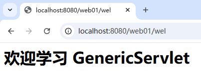

GenericServlet 是一个典型的 缺省适配器模式。为什么是缺省适配器模式？
Servlet 接口定义了多个方法（如 init(), service(), destroy(), getServletConfig(), getServletInfo()），但实际开发中，我们通常只关心 service() 方法（处理请求的核心逻辑）。如果直接实现 Servlet 接口，必须实现所有方法，即使某些方法不需要。GenericServlet 是一个抽象类，它实现了 Servlet 接口，并为所有方法提供了 默认的空实现（比如 init() 和 destroy() 是空方法）。这样，用户只需继承 GenericServlet 并重写自己关心的方法（通常是 service()），而不必强制实现所有接口方法。service()），而无需处理其他不必要的方法。例如：public class MyServlet extends GenericServlet {
@Override
public void service(ServletRequest req, ServletResponse res) {
// 只需实现业务逻辑
}
}
GenericServlet 是缺省适配器模式的典型应用，它通过默认空实现简化了 Servlet 接口的使用，让开发者能够专注于核心逻辑。
有了 GenericServlet，编写 Servlet类时可以不再直接实现 Servlet接口。
编写 WelcomServlet继承 GenericServlet这个抽象类，如果你只需要处理用户的请求，则只需要重写 service方法即可。代码如下：
package com.jkweilai.servlet;
import jakarta.servlet.GenericServlet;
import jakarta.servlet.ServletException;
import jakarta.servlet.ServletRequest;
import jakarta.servlet.ServletResponse;
import java.io.IOException;
public class WelcomeServlet extends GenericServlet {
@Override
public void service(ServletRequest request, ServletResponse response) throws ServletException, IOException {
response.setContentType("text/html;charset=UTF-8");
response.getWriter().print("<h1>欢迎学习 GenericServlet</h1>");
}
}
编写 web.xml配置：
<servlet>
<servlet-name>welServlet</servlet-name>
<servlet-class>com.jkweilai.servlet.WelcomeServlet</servlet-class>
</servlet>
<servlet-mapping>
<servlet-name>welServlet</servlet-name>
<url-pattern>/wel</url-pattern>
</servlet-mapping>
或者如果不想写这个 web.xml 也可以使用注解，就是：WelcomeServlet改一改
package com.jkweilai.servlet;
import jakarta.servlet.GenericServlet;
import jakarta.servlet.ServletException;
import jakarta.servlet.ServletRequest;
import jakarta.servlet.ServletResponse;
import jakarta.servlet.annotation.WebServlet;
import java.io.IOException;
@WebServlet("/wel")
public class WelcomeServlet extends GenericServlet {
@Override
public void service(ServletRequest servletRequest, ServletResponse servletResponse) throws ServletException, IOException {
servletResponse.setContentType("text/html;charset=UTF-8");
servletResponse.getWriter().print("<h1>欢迎学习 GenericServlet</h1>");
}
}
启动服务器，打开浏览器，输入 URL：http://localhost:8080/web01/wel

可以看到，编写 Servlet 类更加的方便了。只需要继承 GenericServlet，重写 service方法即可。
GenericServlet 源码如下：
package jakarta.servlet;
import java.io.IOException;
import java.util.Enumeration;
public abstract class GenericServlet implements Servlet, ServletConfig, java.io.Serializable {
// 在 init(ServletConfig) 方法被调用时，该属性被赋值。
private transient ServletConfig config;
/**
* 什么都不做。所有的 Servlet 初始化工作都由某个 init 方法完成。
*/
public GenericServlet() {}
/**
* 由 Servlet 容器调用，用于通知 Servlet 它即将被投入服务。
*/
@Override
public void init(ServletConfig config) throws ServletException {
this.config = config;
this.init();
}
/**
* 由Servlet容器调用，以允许Servlet对请求作出响应。
*/
@Override
public abstract void service(ServletRequest req, ServletResponse res) throws ServletException, IOException;
/**
* 由 Servlet 容器调用，用于通知 Servlet 它即将被停止服务。
*/
@Override
public void destroy() {}
/**
* 获取ServletConfig对象。
*/
@Override
public ServletConfig getServletConfig() {
return config;
}
/**
* 返回有关该 Servlet 的信息，例如作者、版本和版权信息。
* 默认情况下，此方法返回空字符串。如需返回有意义的值，请重写此方法。
*/
@Override
public String getServletInfo() {
return "";
}
// ================================================以下方法都是为了开发方便额外扩展的方法====================================================
/**
* 如果要重写init方法，建议重写这个无参数的init方法，如果你重写有参数的 init(ServletConfig) 方法，config 属性将无法赋值。
*/
public void init() throws ServletException {}
// 额外扩展的方法
@Override
public String getInitParameter(String name) {
return getServletConfig().getInitParameter(name);
}
// 额外扩展的方法
@Override
public Enumeration<String> getInitParameterNames() {
return getServletConfig().getInitParameterNames();
}
// 额外扩展的方法
@Override
public ServletContext getServletContext() {
return getServletConfig().getServletContext();
}
// 额外扩展的方法：获取当前servlet实例的名字。也就是<servlet-name>的配置。
@Override
public String getServletName() {
return config.getServletName();
}
// 额外扩展的方法
public void log(String message) {
getServletContext().log(getServletName() + ": " + message);
}
// 额外扩展的方法
public void log(String message, Throwable t) {
getServletContext().log(getServletName() + ": " + message, t);
}
}
GenericServlet的init方法：让用户重写无参数的init()方法，保护了父类的保存配置的逻辑private transient ServletConfig config;
public void init(ServletConfig config) throws ServletException {
this.config = config;
this.init();
}
public void init() throws ServletException {}
Servlet，也是实现了ServletConfig，更方便用户调用，不需要先拿到config在使用方法，可以直接使用config的方法。比如下面的函数：@Override
public String getInitParameter(String name) {
return getServletConfig().getInitParameter(name);
}